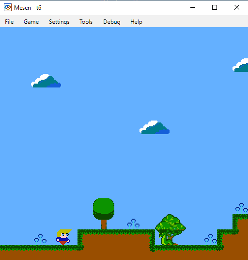
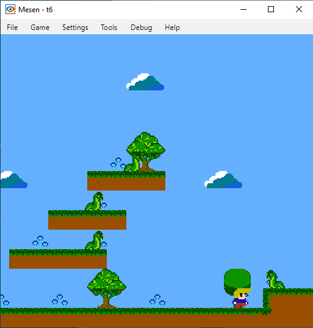

NESFab Tutorial Part 4
Making a game. Adding enemies.
In this NESFab project we add enemies to our platformer. Here you can download the example.
The enemies will move horizontally from one initial position to the final one. All information we need about them is stored in a array of structs called enemies.
// Snake enemies
struct Enemy
UU map_x
UU map_y
UU initial_x
UU final_x
S x_speed
U status // 0-alive 1-killed and falling 2-killed and off the screen
//
ct U level1_num_enemies=8
ct UU enemy_char_width=16
ct UU enemy_char_height=16
...
//enemies
Enemy[level1_num_enemies] enemies
Enemy movement. How it works.
We add our enemy displaying code to the update_sprites function. It handles sprites positions to be able to display them flipped.
...
// draw enemies
for U ei=0; ei<level1_num_enemies; ei+=1
if ( (enemies[ei].status < 2) && (enemies[ei].map_x > my_x_scroll) && ((enemies[ei].map_x+enemy_char_width) < (my_x_scroll+256)) )
UU tex=enemies[ei].map_x-my_x_scroll
U ex=tex.a
U ey=enemies[ei].map_y.a
U attrs=2 // https://www.nesdev.org/wiki/PPU_OAM
U which_sprite=(enemies[ei].map_x.a>>4)&1
//
if (enemies[ei].x_speed < 0) // going left
attrs|=%01000000 // flip h
which_sprite+=2
//
if (enemies[ei].status == 1) //falling enemy
attrs|=%11000000 // flip h&v
which_sprite=4 // flip h&v
//
set_oam_x(i, ex) // x-position
set_oam_y(i, ey) // y-position
set_oam_p(i, e_chr_sprt_table[(which_sprite<<2)]) // tile
set_oam_a(i, attrs) // options
i += 4
set_oam_x(i, ex+8) // x-position
set_oam_y(i, ey) // y-position
set_oam_p(i, e_chr_sprt_table[(which_sprite<<2)+1]) // tile
set_oam_a(i, attrs) // options
i += 4
set_oam_x(i, ex) // x-position
set_oam_y(i, ey+8) // y-position
set_oam_p(i, e_chr_sprt_table[(which_sprite<<2)+2]) // tile
set_oam_a(i, attrs) // options
i += 4
set_oam_x(i, ex+8) // x-position
set_oam_y(i, ey+8) // y-position
set_oam_p(i, e_chr_sprt_table[(which_sprite<2)+3]) // tile
set_oam_a(i, attrs) // options
i += 4
...
And create a new function executed in the main loop called move_enemies(). This function also checks if an enemy killed the player or the player killed crushed an enemy.
...
// move the enemies through the level
fn move_enemies()
// move enemies
for U i=0; i= enemies[i].final_x)
enemies[i].x_speed=-1
// check if player crushed an enemy, killing it
for U i=0; i<level1_num_enemies; i+=1
if (did_crush_enemy(i))
enemies[i].status=1
// check if an enemy killed the player
for U i=0; i<level1_num_enemies; i+=1
if (enemies[i].status == 0)
if ( intersect(player_map_x, player_y, player_map_x+player_char_width, player_y+player_char_height,
enemies[i].map_x, enemies[i].map_y, enemies[i].map_x+enemy_char_width, enemies[i].map_y+enemy_char_height) )
goto mode play_level1() // Initialize game by entering the play level mode
: preserves
// check if a dead enemy has to fall until it dissapears
for U i=0; i<level1_num_enemies; i+=1
if (enemies[i].status == 1)
enemies[i].map_y+=1
if (enemies[i].map_y >= 240)
enemies[i].status=2 // dead and no more movements
...

